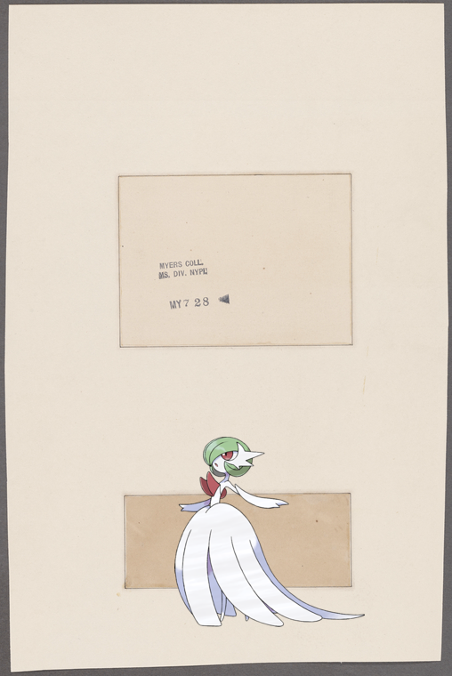

Pokémon in the NYPL archives
2019-1-1 00:10:04
Mesprit +
Lee Gibson
2018-12-31 22:10:08
Pachirisu +
The Pasadena, Broadway at Sixty-first Street.
2018-12-31 20:10:35
Glalie, +
Goodrich route book of New York
!
2018-12-31 18:10:14
Binacle on
[Street entertainers in China]
!
2018-12-31 16:10:11
Gulpin @
Fig. CXII. Antlia duplex.
2018-12-31 14:10:04
Braixen –
Gesundheit (To your health)
!
2018-12-31 12:10:04
Mudkip –
Broadway, East Side. 27th to 29th St.
.
2018-12-31 10:10:06
Magby, on
Letter to Abraham Van Vechten
.
2018-12-31 08:10:04
Seismitoad @
Terrains au bord de la Seine, d'après Yon.
2018-12-31 06:10:03
Basculin-Red-Striped ;
Persépolis. [Monument no. 11.] Plan et coupe de la tombe royale au nord-est du plateau.
!
2018-12-31 04:10:10
Cresselia –
Copte (Écrivain), A Copt (Writer)
.
2018-12-31 02:10:06

Gardevoir @
Taylor, George
!
2018-12-31 00:10:04
Sylveon, Shelgon –
Fortifying Breed's Hill in the night, June 16, 1775.
.
2018-12-30 22:10:04
;
Brooklyn, V. 7, Double Page Plate No. 171 [Map bounded by Buffalo Ave., St. Marks Ave., Utica Ave., Fulton Sst.]
.
2018-12-30 20:10:04
Braviary |
Unidentified baseball player, C.
2018-12-30 18:10:07
Nidoking ;
Brooklyn V. 9, Plate No. 63 [Map bounded by Herbert St., Kingsland Ave., Skillman Ave., Humboldt St.]
.
79
|
78
|
77
|
76
|
75
|
74
|
73
|
72
|
71
|
70
|
69
|
68
|
67
|
66
|
65
|
64
|
63
|
62
|
61
|
60
|
59
|
58
|
57
|
56
|
55
|
54
|
53
|
52
|
51
|
50
|
49
|
48
|
47
|
46
|
45
|
44
|
43
|
42
|
41
|
40
|
39
|
38
|
37
|
36
|
35
|
34
|
33
|
32
|
31
|
30
|
29
|
28
|
27
|
26
|
25
|
24
|
23
|
22
|
21
|
20
|
19
|
18
|
17
|
16
|
15
|
14
|
13
|
12
|
11
|
10
|
9
|
8
|
7
|
6
|
5
|
4
|
3
|
2
|
1
|
0